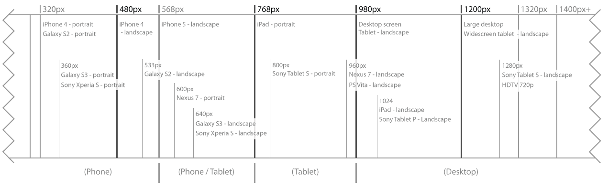

Resize your browser to see how the .container and .grid respond with the .full-bleed and .full-bleed-no-max classes.
Note: You need a display wider than 1400px to see any difference between .full-bleed and full-bleed-no-max.
.container
.container.full-bleed
.container.full-bleed-no-max
.container .grid
.container.full-bleed
.container
.grid.container.full-bleed-no-max
.container.full-bleed
.container
.gridThe Grid
Standard Grid example
The default grid system utilizes 12 fluid columns. Column widths and gutters are percent based, and flex with the width of the parent .grid element. They are also responsive, and change at different breakpoints, ensuring proper proportions across screen resolutions and devices.
Basic grid HTML
For a simple two column layout, create a .grid and add the appropriate number of .span* columns. As this is a 12-column grid, each .span* spans a number of those 12 columns, and should always add up to 12 for each grid row.
.container
.grid
.span4
.span8Given this example, we have .span4 and .span8, making for 12 total columns and a complete grid row.
Rows
Each row is its own individual grid. For multiple rows, just stack multiple .grid containers.
For the rest of this document, the code samples will assume all .grids are contained withing a .container.
.grid .span6 .span6 .grid .span12
Offsetting columns
Move columns to the right using .offset* classes. Each class increases the left margin of a column by a whole column. For example, .offset2 moves .span4 over two columns.
.grid .span3 .span4.offset2 .span3
Slim Grid
The slim grid utilizes the same 12 fluid columns as the Standard grid, but with skinnier gutters and wider columns.
.slimgrid .span3 .span3 .span3 .span3
The slim grid is usually used in concert with masonary. Javascript can be used to change the number of columns dynamically at different breakpoints.
To implement the slim grid, use .slimgrid in place of .grid.
5 Column Slim Grid
The slim grid has a 5-column option, which can be implemented using .slimgrid5. The number of columns needs to add up to 5.
.slimgrid5 .span2 .span1 .span1 .span1
Small Screen Grids
There are 2 different options for grids below the 768 breakpoint:Mobile-GridandNo-Grid. The small-screen grid will override the.grid,.slimgrid or.slimgrid5 classes, and should be used in addition to them..
Mobile-Grid
The mobile-grid utilizes 6 fluid columns. To implement, add the appropriate m-grid class in additionto your primary .grid class. Class options are .m-grid-at-767,.m-grid-at-567,.m-grid-at-479 or.m-grid (same as .m-grid-at-767 );
and add the appropriate.m-span and (optionally).m-offset class to each column - again, in addition to the primary.span class. The total mobile spans/offsets need to add up to 6.
Resize your browser to below 768px wide to see the mobile grid take effect.
Hover over any of the columns to see the actual class names that affect it.
Check it out!- You canhide prior content on this page, and limit the paragraph widths, so the content doesn't jump around so much when you're resizing.
.grid.m-grid-at-767 .span4.m-span1 .span4.m-span2 .span4.m-span2.m-offset1
No-Grid
Theno-gridoption collapses all grid spans into stacked rows, ignoring all.span's,.offset's,.m-span's and.m-offset's. To implement, add the appropriate no-grid classin additionto your primary.grid class. Possible classes are.no-grid-at-767,.no-grid-at-567, and.no-grid-at-479.
.grid.no-grid-at-767 .span4 .span4 .span4
Using both m-grid and no-grid
You can use the mobile-grid for a range of breakpoints, and switch to the no-grid below a certain breakpoint. Simply add the appropriate.m-grid-at and.no-grid-at classes for the target breakpoints.
Resize your browser to below 768px wide, and then to below 568 wide, to see the mobile-grid and no-grid take effect.
.grid.m-grid-at-767.no-grid-at-567 .span4.m-span1 .span4.m-span2 .span4.m-span2.m-offset1
Full-bleed on small screens
By default, margins are applied to small screens the same as desktop. The.full-bleed (and.full-bleed-no-max ) classes will affect all resolution sizes. To apply full-bleed below 768px, when not used on desktop, use.full-bleed-at-767,.full-bleed-at-567,.full-bleed-at-479, or.m-full-bleed (same as.full-bleed-at-767 ).
Currently, there's no way to override a.full-bleed to add margins back for mobile.
Responsive design

Media queries allow for custom CSS based on a number of conditions—ratios, widths, display type, etc—but usually focuses aroundmin-width andmax-width.
All modules have been designed to display on any width screen from 320px up, and may have any number of independent breakpoints. There are some primary breakpoints that most modules respond to.
This chart shows the primary breakpoints used on the site, with other relevant information such as grids and popular devices.
*A device's 'effective pixels,' or 'css pixels,' may be different from its 'device pixels.' For instance, the iPhone 5 has a device pixel width of 640, but an effective pixel width of 320.
As you can see, the range from 568px to 768px can be targeted as either tablet or phone.
Responsive utility classes
For faster mobile-friendly development, use these utility classes for showing and hiding content by device. Below is a table of the available classes and their effect on a given media query layout (labeled by device).
| Class | Phones767px and below | Tablets768px to 979px | DesktopsDefault |
|---|---|---|---|
.visible-phone | Visible | Hidden | Hidden |
.visible-tablet | Hidden | Visible | Hidden |
.visible-desktop | Hidden | Hidden | Visible |
.hidden-phone | Hidden | Visible | Visible |
.hidden-tablet | Visible | Hidden | Visible |
.hidden-desktop | Visible | Visible | Hidden |
Overrides for phone/tablet
On a per-module bases, thephone/tabletbreakpoints can be overridden, so thatphonewon't apply until a lower breakpoint. You can trigger the phone layout at a lower breakpoint by adding.phone-at-567 or.phone-at-479.
When to use
Use on a limited basis and avoid creating entirely different versions of the same site. Instead, use them to complement each device's presentation.
Responsive utilities test case
Resize your browser or load on different devices to test the above classes.
Visible on...
Green checkmarks indicate that class is visible in your current viewport.
- Phone✔ Phone
- Tablet✔ Tablet
- Desktop✔ Desktop
Hidden on...
Here, green checkmarks indicate that class is hidden in your current viewport.